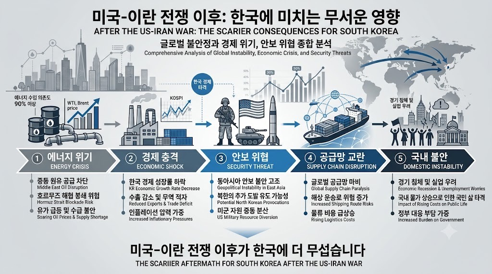

전인구경제연구소MORNING DIGEST · 2026-07-27 · 전인구경제연구소🎬 영상
미국 이란 전쟁 이후가 한국에 더 무섭습니다(ft.박상기 박사 2부)

01핵심 개요
항목
내용
채널
전인구경제연구소
제목
미국 이란 전쟁 이후가 한국에 더 무섭습니다(ft.박상기 박사 2부)
길이
약 28분(1655초)
핵심결론 1
미국-이란 전쟁이 일단락되면 트럼프 행정부가 관세·호르무즈 통행세·특정 산업 시장 통제력 등 다각적 "청구서"를 동맹국에 제시할 가능성이 매우 높으며, 그 내역 상당수는 언론에 공개되지 않을 것으로 전망된다.
핵심결론 2
트럼프는 협상 초반에 호르무즈 통과 화물 가치의 20%를 걷겠다는 "퍼스트 오퍼(앵커링 이펙트)"를 던진 뒤, 반도체 등 대미 투자 규모(예: 5천억 달러 이상 투자 시 15%로 인하)와 연계해 관세율을 딜로 조정하는 방식을 취할 것으로 예상된다.
핵심결론 3
2023년 기준 미국 군수 산업은 904명의 로비스트를 고용해 총 1억 4천만 달러를 지출했으며, 이는 전쟁 이후 미국 방산업체가 동맹국에 무기 구매를 사실상 강매하다시피 하는 배경으로 지목된다.
02핵심 내용 구조
1) 전쟁 이후의 "청구서" 프레임
진행자와 박상기 박사는 현재 시점에서 전쟁 자체보다 "전쟁이 끝난 뒤 트럼프가 내밀 청구서"가 한국에 더 위협적이라는 문제의식을 공유하며, 청구서 항목으로 관세, 특정 산업(석유 등)의 시장 통제력, 새로운 코스트 청구 항목 신설 가능성을 제시한다.
청구서 내역 중 일부는 언론·방송에 공개되지만 상당 부분은 비공개로 처리될 것이라고 전망하며, "청구서는 단순히 얼마의 비용을 썼으니 그만큼 내라는 방식이 아니다"라고 강조한다.
2) 중동 재건 사업, 한국은 "하도급"에 그칠 가능성
전쟁이 마무리되면 중동 재건 사업이 시작되지만, 실제 계약 당사자(컨트랙터) 지위는 이미 전쟁 발발 전부터 관계자들 사이에서 포지션이 정리된 상태라 한국이 원청 계약자로 참여하기는 어렵다고 진단한다.
다만 담수화·발전 등 한국이 중동에서 이미 고객 기반을 확보한 분야는 하도급 형태로 참여할 기회가 있을 것으로 본다.
이번 전쟁은 미국이 단독으로 수행해 영국 등 과거처럼 다국적 참여가 없었던 만큼, 재건 수혜도 미국이 독점적으로 가져갈 구조라고 설명한다.
3) 호르무즈 해협 통행세와 20% 앵커링
트럼프가 언급한 "호르무즈 통과 화물 가치의 20%"는 생산·운영 비용이 거의 없는 통행세 개념으로, 협상에서 첫 조건을 크게 던져 이후 협상 여지를 만드는 "퍼스트 오퍼/앵커링 이펙트" 전략이라고 분석한다.
통행세라는 명칭 대신 "안전세", "통행 안전 보장 비용" 등으로 명목을 바꿔 이 지역 안보 강화 명분을 내세울 수 있다고 예측한다.
원래 호르무즈 해협은 자유 통항이 원칙이었으나, 통행료 개념이 도입되면 통행 허가·차단 권한 자체가 미국의 정치적 지렛대가 될 수 있다고 우려한다.
4) 국가 단위 협상 사례: 원유 수입액 기준 압박 시나리오
한국 정부가 연간 약 800억~1천억 달러 규모의 원유를 수입한다고 가정할 때, 이 금액의 20%를 통행세 명목으로 요구받는 시나리오를 제시하며, 협상 과정에서 "각자 수용 가능한 선에서 나누자"는 방식으로 삼성 반도체의 애리조나 투자 확대나 방산 구매 물량(예: 연 500대 규모의 무기 도입을 200대로 조정) 등과 맞바꾸는 패키지딜 구조가 나타날 수 있다고 설명한다.
이 과정에서 협상 대상이 정부와 기업 양쪽에 동시에 세워져 압박이 이중으로 가해지는 구조라고 지적한다.
5) 미국 방산업체 특수와 로비 구조
미국이 이번 전쟁에서 항공모함 전단 3개와 토마호크 미사일 수백 발을 투입하고 인명 손실까지 감수한 점을 "청구서"의 근거로 활용할 것이라고 본다.
2023년 기준 미국 군수 산업이 연방 로비에 904명의 로비스트를 고용하고 총 1억 4천만 달러를 지출했다는 수치를 제시하며, 이 비용을 회수하기 위해 최소 수천억 달러 규모의 반사이익(동맹국 대상 무기 강매 등)을 추구할 것이라고 전망한다.
이를 "트럼프의 군사적 헤게모니 회복 논리(3월 이란에 당했다는 인식 회복)"와 연결지어, 압도적 군사 승리가 곧 산업·외교 전반의 협상력으로 전환된다고 설명한다.
6) 호르무즈 해협의 복합 산업적 가치와 미중 패권 구도
호르무즈 해협을 단순 석유·가스 통로가 아니라 해상보험·재보험, 국제 선박 금융, 달러 결제(뱅크오브아메리카 결제망 확대 요구 포함), 수출 안보, 중국·인도·유럽 에너지 조달이 얽힌 "복합 산업단지"로 규정한다.
유가 상승이 미국에 유리하게 작용하는 구조(선물시장 즉시 반영)를 짚으면서도, 유가·서유가 급등은 러시아에 반사이익을 주고 이는 다시 중국의 힘을 강화하는 역설적 연쇄를 설명한다.
러시아-우크라이나 전쟁이 러시아의 정유시설 타격을 통해 이 반사이익을 상쇄하는 역할을 하고 있다는 지정학적 해석을 제시한다(크림반도 병합의 배경으로 흑해 통과 러시아산 가스관의 안전 확보 목적을 지목).
7) 협상 AI "네고메이트"와 대응 전략
박상기 박사는 25년간의 협상 컨설팅 경험을 바탕으로 프롬프트 작성 없이 완비된 분석 프로세스를 제공하는 협상 AI "네고메이트"를 개발했다고 소개하며, 국내 대형 전자회사에서 시연 후 도입 관심을 받았다고 밝힌다.
AI 활용 시 일반 환각(hallucination) 문제가 약 50% 수준으로 나타난다는 조사 결과를 언급하며, 이를 극복하기 위해 프롬프트 없이 선택형 인터페이스로 상대 프로파일링(누가·무엇을·왜)과 상황 분석을 자동화했다고 설명한다.
AI가 미국에서 만들어졌기 때문에 미국 정부·기업의 사고방식과 정보가 이미 학습돼 있어, 이를 역이용해 미국의 협상 시나리오를 예측하고 최적 대응안을 도출하는 것이 가능하다고 주장한다.
03기술적 맥락
앵커링 이펙트(Anchoring Effect): 협상에서 첫 제안(퍼스트 오퍼)을 크게 던져 이후 협상의 기준점을 유리하게 설정하는 심리적 기법으로, 트럼프의 "20% 통행세" 발언이 대표 사례로 제시된다.
컨트랙터(Contractor) vs 하도급 구조: 재건 사업의 원청 계약 당사자(갑) 지위는 이미 전쟁 이전에 배분이 끝난 상태이며, 실무(건설·자재 등)는 하도급 형태로 하부 국가에 내려온다는 국제 재건사업의 관행을 설명한다.
네고메이트(협상 AI): 프롬프트 작성 없이 상대 프로파일링·상황 분석·최적 대응안 도출을 자동화한 협상 지원 AI 도구로, 일반인·기업·투자자가 모두 활용 가능하다고 소개된다.
04전략적 의미
한국 정부와 기업은 미국의 전후 "청구서"가 관세·통행세·투자 유치·무기 구매 등 다각적 형태로 동시에 제시될 가능성에 대비해, 개별 협상이 아닌 패키지딜 전체를 조망하는 대응 체계가 필요하다.
반도체 등 핵심 산업의 대미 투자 확대 요구가 관세 인하와 연계될 수 있으므로, 투자 결정 시 관세 협상 카드로서의 가치를 함께 계산해야 한다.
원유 수입 의존도가 높은 한국 경제 구조상 호르무즈 통행세 도입은 에너지 비용 상승으로 직결되며, 이는 물가(예시로 언급된 삼계탕 가격 상승)에도 파급될 수 있다.
05핵심 워크플로우·방법론
네고메이트의 협상 분석 프레임은 1) 상대(미국) 프로파일링 분석(누가·무엇을·왜), 2) 상대편 상황의 정밀 분석(뉴스 요약 수준이 아닌 심층 정보), 3) AI를 통한 시나리오 예측(부처별·인물별 논리 도출), 4) 예측 결과를 재입력해 최적 대응안을 역산出하는 4단계 구조로 제시된다.
이 프레임은 투자자 관점에서도 "미국의 어느 부서·기업이 주력으로 뜰지"를 사전에 가늠하는 투자 판단 도구로 활용 가능하다고 설명된다.
06활용 시나리오
정부·기업의 통상 협상 담당자는 청구서의 명시적 항목(관세)뿐 아니라 비공개 항목(투자 유치, 무기 구매 물량 조정 등)까지 포괄한 시나리오 플래닝에 이 프레임을 참고할 수 있다.
개인 투자자는 호르무즈 리스크에 따른 유가·물가 변동을 활용해 에너지·방산 관련 종목의 반사이익 가능성을 점검하는 참고 자료로 활용할 수 있다.
협상 AI 도구(네고메이트) 사용을 고려하는 기업 실무자는 프롬프트 전문성 없이도 선택형 인터페이스로 협상 분석을 수행할 수 있다는 점을 참고할 수 있다.
07현황 및 전망
영상 시점 기준 전쟁은 진행 중이며, 화자들은 전쟁 종료 후 단기간 유가 급등, 이후 미국의 다각적 청구서 제시, 반도체·방산 등 산업별 패키지딜 협상이 순차적으로 전개될 것으로 전망한다.
뉴욕 증시는 전쟁 여파에도 급락 가능성이 낮다는 진단이 언급되며, 이는 투자심리 측면의 위안 요소로 제시된다.
러시아-우크라이나 전쟁은 당분간 지속되며, 이는 러시아의 유가 상승 반사이익을 상쇄하는 지정학적 균형추 역할을 계속할 것으로 전망된다.